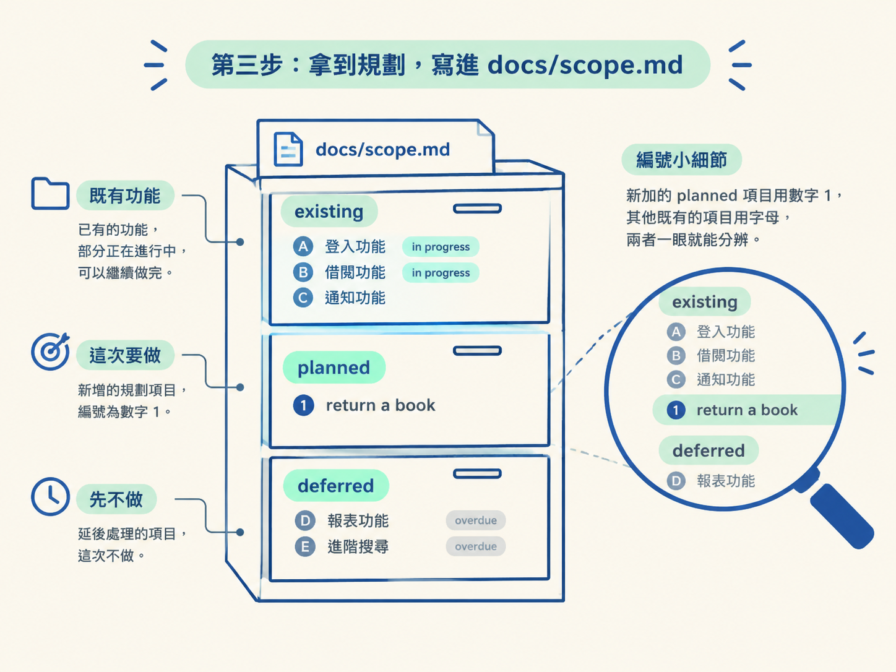
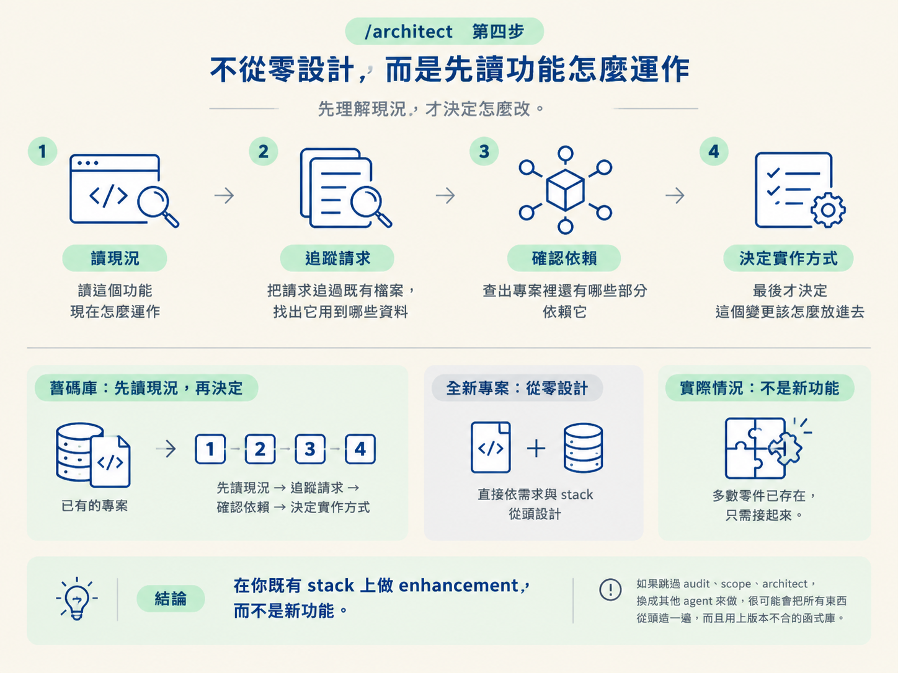
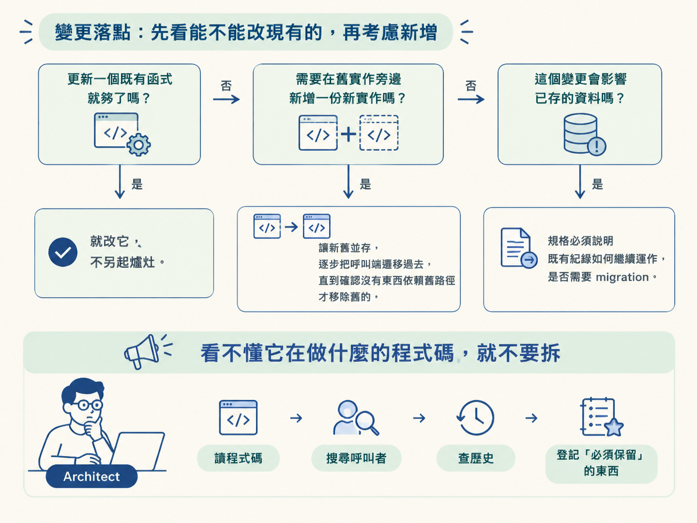

在已建好地圖的舊碼庫上跑 /scope 規劃一個 slice（existing／planned／deferred、寫進 docs/scope.md），再用 /architect 先讀功能現況、追請求路徑、查誰依賴它，才決定變更要落在哪裡，並守住「看不懂的程式碼不要拆」。
上一節把地圖驗過之後，你已經確定它反映的是真實專案。這一節要做的，是在這個基礎上規劃一次變更——而在你真正打開檔案改程式碼之前，你應該先拿到兩份紙：一份是這次要做哪個 slice 的規劃，寫在 docs/scope.md；另一份是這個 slice 的規格，寫在 specs/ 底下。做完這一步，你會得到這兩份可審閱的文件，而不是散落在對話裡的想法。
動手前你需要先具備幾樣東西：BookWise 的地圖已經建好也驗過了（前一、二節）、該有的 ENV 變數都拿到了，而且你人在這個 repo 裡。準備好之後，就從 /scope 開始。
scope
在它建立計畫之前，/scope 會先讀 /audit 產出的 AGENTS.md。這一步很關鍵：那份地圖給它專案結構、可用指令、慣例，以及任何它必須遵守的警告。少了這份地圖，它就只能靠當下讀到的片段去推測；有了地圖，它一開始就站在「這個專案平常怎麼運作」的基礎上。
讀完之後，它會接著辨識三件事：這個變更牽涉碼庫裡的哪些部分、工作應該以什麼順序進行、以及這個變更值得多少驗證。預期你會看到它反過來問你一個問題：你想先規劃圖書館 app 的哪一個 slice？
示範裡選的 slice 是還書與續借流程：學生可以歸還借出的書、續借到期日，管理員則能看到更新後的狀態。這次先只做「還書」，把逾期與其他限制先擺到後面。
你回答之後，它會同時開始掃描既有碼庫，把已經做好的功能整理成一份 inventory。預期你會看到一份功能清單回來：目前為止做過的功能都被登錄下來，接著它會繼續問你下一步想做什麼、要用哪一種 build approach。
這裡有一個值得記下的行為：它的每一條建議，都是根據它對這個碼庫的理解提出來的，而不是憑空推薦。這正是先讀現況的價值。
/scope 會把規劃寫進 docs/scope.md。內容的結構大致長這樣：既有功能被標成 existing，其中有些正在進行中（in progress），所以可以繼續把它們做完；然後它加入一個新的 planned 項目，也就是這次要做的「return a book」。規劃裡也會把這次不做的東西標成 deferred。這裡有個小細節很有意思：新加的 planned 項目編號是「1」，而其他既有的項目編號是用字母，兩者一眼就能分辨。

docs/scope.md ├── existing 既有功能（有些標為 in progress，可以繼續做完） ├── planned 1. return a book ← 這次要做的 └── deferred overdue 等先延後，這次不做
拿到這份規劃後，預期你會做兩件事：先換一個乾淨的 session，再進到架構規劃。示範者把整個節奏講得很清楚——先 clear，再 architect。
clear architect return a book
在一個全新的專案上，/architect 會依照你選的需求與 stack 去設計功能。但在這裡，它的行為完全不同。在提出任何建議之前，它會依序做四件事：
在這裡，/scope 幫了它一點忙：scope 已經先發現，還書流程需要的多數零件其實都已經存在了，只是需要把它們接起來。所以 architect 給出的框是「在你既有 stack 上做 enhancement，不是一個新功能」——它建立在既有的「借書」功能之上，而不是另起爐灶。它也順帶指出：如果跳過 audit、scope、architect，換成其他 agent 來做，很可能會把所有東西從頭造一遍，而且用上版本不合的函式庫。

architect 會用一串問題把設計收斂。示範裡被問到的包括：誰可以觸發還書（答案是只有 admin）、效果要即時且原子（atomic）嗎、逾期有沒有差別、以及是否只接還書這個動作、還是連狀態下拉選單一起改（答案是只接還書）。
其中有個轉折值得注意：它發現這個動作沒辦法做到原子，於是反過來問你是不是要分成兩次做。你同意的話，規格就會照這個決定寫。這些問答存在的目的，不是把功能做得更漂亮，而是找出「非做不可」的事，避免不必要的修改。有時候那代表只需要更新一個既有函式，而不是重寫一整塊。
需求談完，它會把規格寫進 specs/，示範中的路徑是 specs/1. return a book。這份規格不只是描述最後的功能，它會交代四件事：變更屬於哪裡、哪些既有行為必須維持不變、預期會動到哪些檔案、以及你要如何證明結果。它也附上完整的 build plan、後果，以及後續事項。如果你想把關得嚴一點，也可以拿另一顆模型來交叉檢查這份規格。
specs/1. return a book ├── 變更屬於哪裡 ├── 哪些既有行為必須維持不變 ├── 預期會動到哪些檔案 └── 你要怎麼證明結果
為什麼規格要交代「既有行為不變」和「證明方式」？因為舊程式碼裡常有一種細節：它的用意第一眼看不出來。一個奇怪的條件可能是在處理好幾年前的某個客戶案例；一個多出來的資料庫查詢，可能只是因為部署環境行為不同；一行看起來多餘的程式碼，可能是在擋另一個服務還在用的 API 合約。這些如果不先寫明「不能動」，很容易在重構時被當成雜訊清掉。
規劃變更落點時，這是一個有分支的判斷：
貫穿這一切的是同一條紀律，課程用一句很直白的話講它：看不懂它在做什麼的程式碼，就不要拆。architect 不會因為「一時看不出這段行為為什麼存在」就把它拿掉。它會去讀程式碼、搜尋呼叫者、必要時查歷史，然後把「必須保留」的東西記錄下來。這是你在舊碼庫裡保護既有行為的核心動作。

走完這一步，你應該拿到幾樣可驗證的東西：docs/scope.md 裡有一份規劃，把既有功能、這次要做的 planned slice、以及 deferred 的項目分清楚；specs/1. return a book 裡有一份被接受的規格，寫明變更落點、必須不變的行為、會動到的檔案，以及怎麼證明結果；而 scope 也會在規格被接受後更新。
到這裡為止，你都還沒有改任何程式碼。這是有意的：規劃與設計的原理屬於 /scope 與 /architect 的範疇，而「照著規格把程式碼寫出來」是下一步 /develop 的事。先把紙上的東西談清楚，再把刀伸進檔案裡，正是這一節要建立的手感。
在已建好地圖的舊碼庫上，
/scope會先讀 audit 的AGENTS.md，問你要規劃哪個 slice，同時掃描既有碼庫做功能 inventory，最後把 existing／planned／deferred 的規劃寫進docs/scope.md。接著clear再跑/architect；它不從零設計，而是先讀功能現況、把請求追過既有檔案、查誰依賴它，才決定變更落點，並把這次定位成既有 stack 上的 enhancement。需求問題用來收斂決定，規格寫進specs/，交代變更落點、必須不變的行為、會動到的檔案與證明方式。落點的原則是能改既有函式就改，否則新增在旁、逐步遷移；影響資料就要說明既有紀錄如何繼續運作與是否 migration。而最底線的一條：看不懂的程式碼不要拆。
規劃與規格都到位了，接下來才是把刀伸進程式碼。下一節會用 /develop，看它怎麼跟著既有模式動手，把變更收在規格劃定的邊界內，做出一個最小而安全的成果。